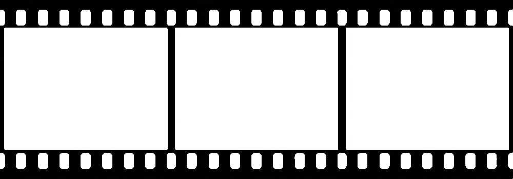

IL CINEMA
Warhol cominciò a girare film nella Factory intorno al 1963, partendo a lavorare da Kiss e proiettandoli privatamente ai suoi amici, prima di rilasciarli al grande pubblico.
I film di Warhol di questo primo periodo si possono definire minimali:
Sleep, Kiss, Eat, Blow Job, Empire mostrano azioni ripetute dilatate nel tempo, riprese con una camera fissa.
A Warhol interessava la composizione dell'immagine che si viene a creare partendo da un unico punto di vista.
Questi primi film sono come quadri che, invece di essere appesi, sono proiettati su una parete bianca.
